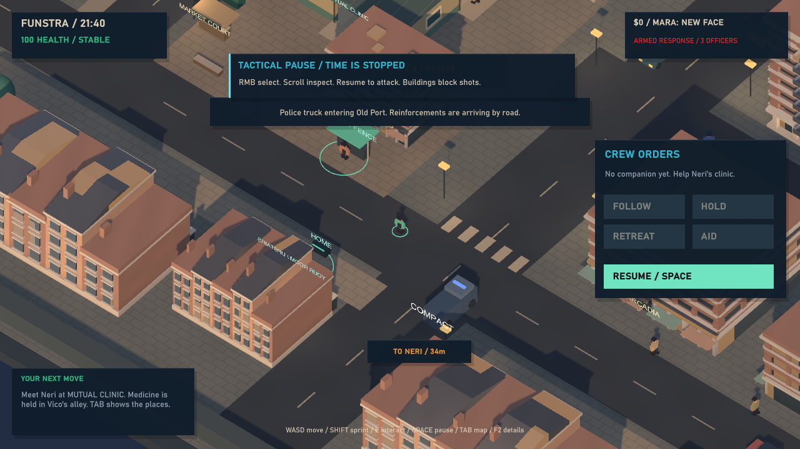
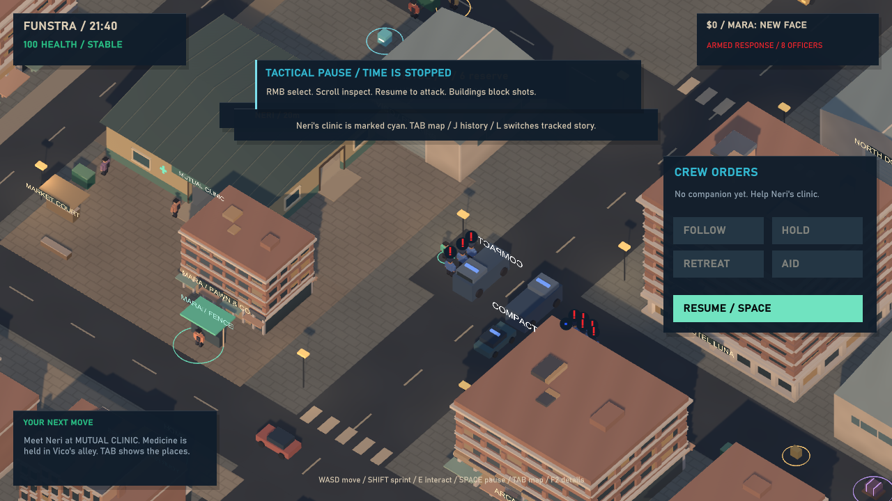
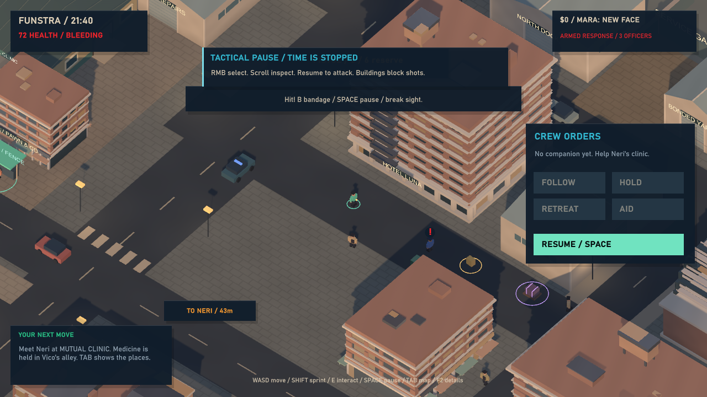
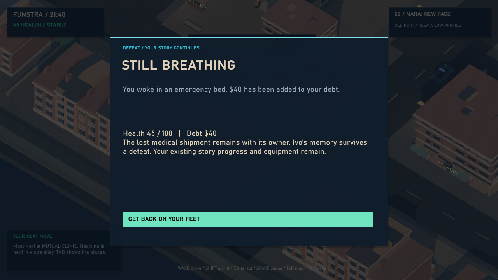

Funstra / Field review / 08 September 2026
Police Response
A reported gunman now brings armed patrols and physical truck arrivals. The first tier works; collective pressure and clearer aftermath are the next proof.
Local playable increment 0.4.1, following the owner-approved Demo04. Nine police maximum, pistols, two trucks. Rifles, army units and physical grenades remain scheduled for later slices.
4 independent guided reviews268 core runtime checks2,201 editor checksAll tests muted
Four lenses, four recorded verdicts
Each reviewer independently launched the same identified executable, passed the 35-check focused route, inspected four fresh rendered captures and read the full log. Original reviews and scores are preserved.
Dag Møller
7/10
Finite people, honest reports
The response accounts for personnel and ammunition. Prove collective pressure with a live nine-officer encounter and escape.
Full independent review ↗Priya Raman
7/10
A city answers violence
Physical arrivals make the consequence credible. Recovery wording and a return to the assaulted resident need more context.
Full independent review ↗Marcus Webb
7/10
A functioning first tier
Clean launch, persistent casualties and real return fire. Tactical pause obscures ammunition; full-squad and lower-tier hardware coverage remain open.
Full independent review ↗Nell Okafor
7/10
Danger with a way back
True pause and explicit recovery costs help. Make loss of sight legible and leave more of the street visible while planning.
Full independent review ↗Conference synthesis
The panel agrees that tangible arrivals, finite personnel, casualty persistence and real projectile return fire form a credible first consequence. None reproduced a blocking failure in the focused route. All four independently scored this increment 7/10; these scores do not revise their earlier Demo03 reviews.
Dag and Marcus prioritize the unproven collective fight. Priya asks what the wounded resident remembers once the trucks stop looking. Nell emphasizes knowing when sight has been lost and having enough visible street to plan an escape. These are differences of emphasis, not an invented disagreement over whether the current checks passed.
Evidence boundary. The dispatch fixture explicitly advances production road and actor systems while omitting combat. A later fresh fixture runs an actual patrol exchange in normal Update. The evidence establishes nine-person logistics and live return fire separately; it does not establish sustained nine-officer coordination or the future 32-soldier maximum.
Creative Director disposition
| Finding | Decision and next action |
|---|
| Empty-ammo patrol stall; stale truck requests; recovery patrol positions; traffic blocked by old props. | Fixed before panel. Relevant focused checks and the full Streets and Legacy regressions pass on the panel build. Earlier failed traffic evidence is retained separately. |
| Pause covers weapon information; contact versus search feedback is thin. Marcus, Dag and Nell. | Accepted follow-up, nonblocking for this increment. #40 reserves visible ammunition and clarifies loss of sight before rifle scaling. Response count, pause/resume and live fire remain usable. |
| No sustained nine-officer live-pressure proof; crowded deployment and ammo exhaustion deserve replay. Dag and Marcus. | Accepted validation gate before scaling. #40, linked to Demo06. Do not market roster capacity as proven coordinated pressure. Existing focused claims remain bounded. |
| Recovery claims a lost medical shipment in a civilian-assault fixture; resident aftermath not shown. Priya. | Accepted presentation/aftermath follow-up. #22 conditions recovery text on actual events and adds a rendered return to affected people. No corrupted shipment state was observed; existing recovery transaction passes. |
| 32 soldiers, rifles, army trucks and physical grenades. | Approved roadmap, future implementation. Demo08 owns the maximum-pressure tier. No credit for those features in this candidate. |
No post-panel gameplay change was made, so the original reviews still identify the packaged gameplay assembly. The product owner has approved Demo04; acceptance of this new increment remains theirs.
Rendered receipts
Actual exported-player captures, paused for inspection. Camera locations and some state are staged. These are not continuous motion or human free play.

Truck entering Old Port; three initial patrols.
Two deployed trucks; eight living police after a staged casualty.
Live patrol fire has wounded the exposed player.
Induced defeat: 45 health, $40 debt, a route back.Validation and limits
Police: 35 checks · Streets: 143 checks · Legacy: 90 checks. The four independent 35-check reviews repeat the focused route; they are not counted as new core scenarios. Export completed with zero errors and warnings.
The Streets traversal profile recorded 1,649 frames at 1280×720, capped at 30 FPS: p50 33.334 ms, p95 33.344 ms, maximum 46.058 ms on an RTX 4090 / i9-14900KF. One Funstra process was observed. This was not a full reinforcement firefight or a minimum-spec benchmark. No listening or human control-feel assessment is claimed.
Trucks stay parked after search expires; their personnel and ammunition are finite until recovery resets the response. The remaining Demo05 acquisition/supply work is also outside this increment.
Gameplay assembly SHA-256: 3CBCA4699C37181628C9167712F394FBAB2F125E1E1845AE069A51C2EC0A8BBC
Source HEAD: 38ad01c218ecc93a20722fbfe99bd3c9a67dcbd2 plus local uncommitted implementation. The source commit alone does not reproduce this artifact.